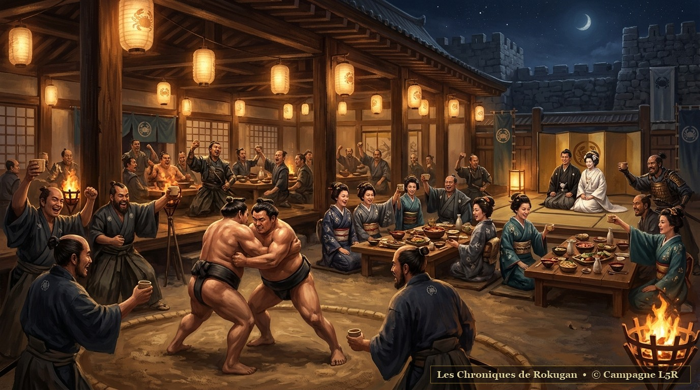
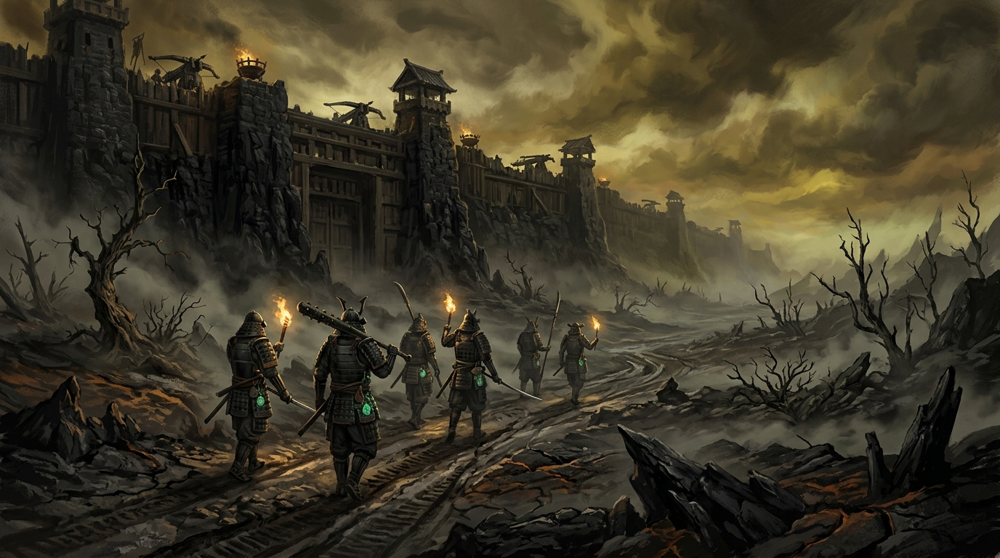
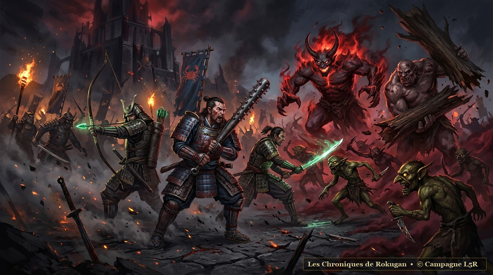

Avec la participation d’Okado, Toma (PNJ), Shinta et Samui
Okado m’a fait l’honneur de m’inviter à son mariage et je suis donc sur ses terres pour célébrer leur union. Samui est également présent et est fier de nous présenter sa petite fille.
L’ambiance est bon enfant et le saké ne manque pas. Je passe un très bon moment avec mes compagnons de routes.

Samui me provoque nous finissons par nous inscrire à un tournoi de lutte. Je n’ai pas trouvé le courage de refuser (probablement aidé par les effets de l’alcool). Le tirage au sort veut que nous nous affrontions tous les deux dès le premier match et je perds de justesse. La finale est contre Okado et Toma s’affrontent en finale et c’est Toma qui sort vainqueur.
S’ensuit un concours de tir à l’arc que je remporte au coude à coude avec Samui malgré mon score parfait. Je suis étonné de remporter deux koku comme prix du vainqueur.
La fête continue mais Okado se rend compte que sa femme (Hiruma) a disparu. Le kami de la terre nous apprend que 3 hommes sont rentrés dans la pièce et 4 en sont sorties. C’est donc un kidnapping. En sortant dans la rue, Okado reçois un caillou sur la tête. Il y a un message accroché dessus. Il nous demande de nous rendre à ½ journée dans l’Outre-monde. Okado comprend alors que c’est l’ennemi de son père qui a fait le coup. Nous passons chez le forgeron pour s’équiper : jade, flèches sifflantes, et vivre. Tout le nécessaire pour ma première virée dans l’Outre-monde !
A peine la muraille passée, je ressens une chape de plomb me tomber sur les épaules. Je sens que mes jambes sont plus lourdes et j’ai plus de mal à respirer comme si l’air était vicié et épais. Le paysage est désertique et les seules traces de civilisation que nous voyons sont deux sillons creusés par une charrette.

Je continue à marcher vers le point de rendez-vous avec les camarades mais sans jamais vraiment m’habituer à cette pression invisible.
Nous arrivons à la grotte indiquée dans le message. Okado décide d’y aller seul et nous restons à l’extérieur sur nos gardes à l’écoute du moindre bruit.
Lorsqu’il ressort enfin, il nous demande si nous souhaitons l’aider. Il doit aller affronter un oni plus loin dans l’Outre-monde. Nous acceptons volontiers.
Après quelques heures de marche, nous apercevons des silhouettes qui semblent venir vers nous. Je me rends compte le premier que c’est une marée de gobelins qui viennent vers nous ! La bataille éclate. Les gobelins tombent par dizaines sous les moulinets de mes compagnons d’armes. Je sens que le sol tremble… un ogre avec un tronc d’arbre s’approche sur un côté du champ de bataille ! Je concentre mes tirs de flèches dans sa direction. Je n’ose même pas imaginer les dégâts que pourrait causer le tronc s’il m’atteint. Plusieurs flèches l’ont déjà bien amoché lorsqu’il arrive sur nous. Ses mouvements plus lents permettent à mes compagnons de l’achever. Mais c’est alors qu’un oni apparait devant nous. Après un dur et long combat, nous réussissons à l’achever.

Okado nous explique que c’était son père et qu’il est heureux de savoir qu’il repose enfin en paix.
Nous retournons en ville pour nous reposer un peu. Nous repartons le lendemain vers le repère de l’ennemi de son père, Kawa. Il nous demande de rester en retrait et pénètre seul dans le repère, sabre au clair. En ressortant quelques heures plus tard, il nous explique avoir résolu définitivement le problème et nous invite à le suivre un peu plus loin. Nous arrivons devant une maison dans laquelle nous entrons. La femme d’Okado est là, attachée à une chaise. Nous la délivrons et nous rentrons chez Okado pour nous reposer.
Deux jours plus tard, je remercie mes hôtes et je me mets en routes pour retourner sur les terres de mon clan.